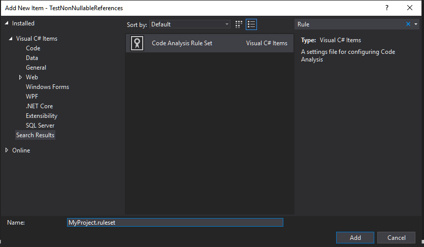
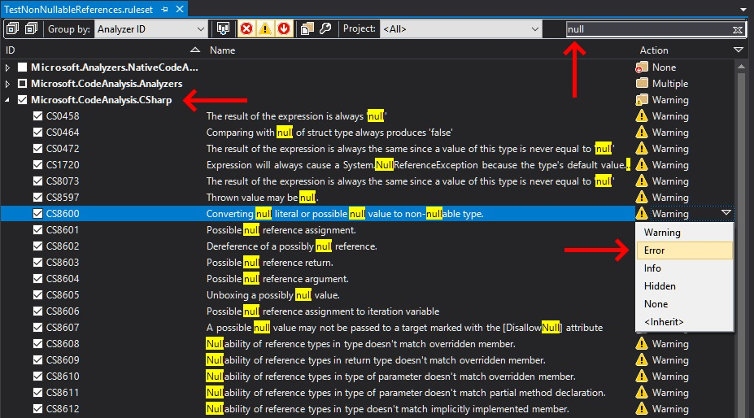
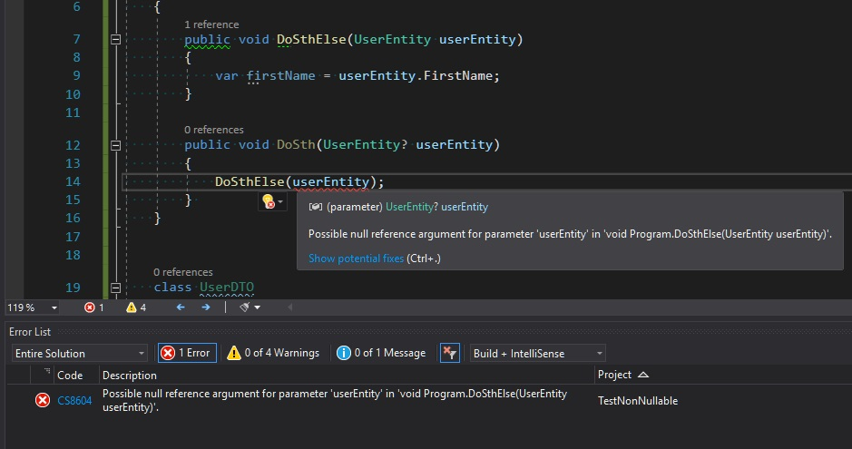
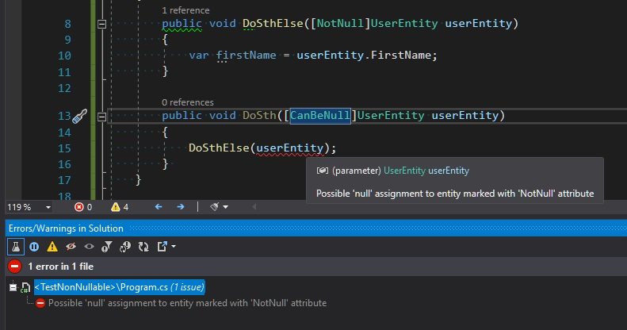
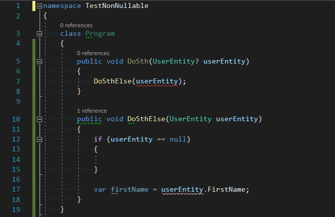
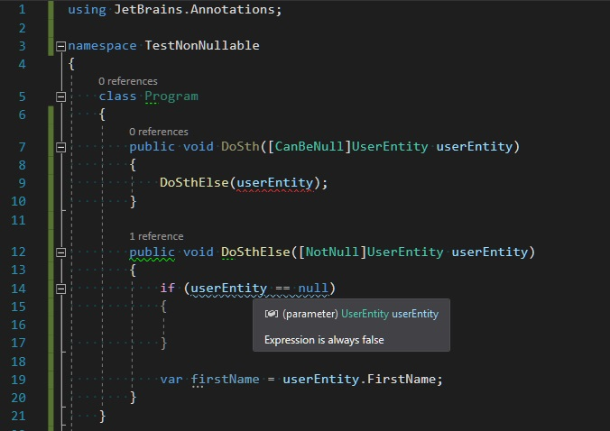
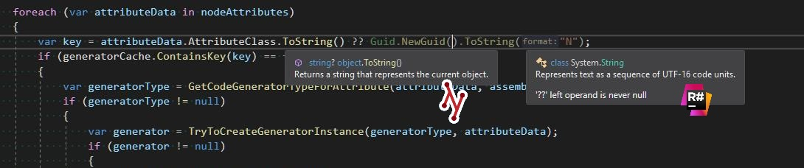

Non-nullable references with C# 8 and .NET Core 3.0
Two weeks ago .NET Core 3.0 was officially published. Together with the new framework version, Visual Studio 2019 got support for a long-awaited C# 8.0. The complete list of the new language features is available here on the MSDN, but the one that deserves special attention is Nullable reference types. This is a very important change in the language semantic, because from now we will be able to eliminate certain class of errors related to reference nullability on the compilation stage. In this blog post, I will show you how to use this new language feature and how to achieve similar benefits if you still cannot use .NET Core 3.0 in your projects.
How to use Non-nullable references 🔗︎
If our project is targeting .NET Core 3.0 or higher, we can start using non-nullable references. However, when we add ? annotation to the reference type we get the following warning:
CS8632: The annotation for nullable reference types should only be used in code within a '#nullable' annotations context.
Our code will compile but all the rules related to the non-nullable references will be ignored (our code will be interpreted as it was before C# 8). Because this feature is a breaking change in the language, it should be explicitly enabled. To test it in a single file, add #nullable enable directive. In order to enable it for the whole project, add <Nullable>enable</Nullable> to your csproj definition. If you are serious about using non-nullable references, I would recommend enabling it for the whole solution by adding Directory.Build.props file in the root directory of your source code with the following content:
<Project>
<PropertyGroup>
<Nullable>enable</Nullable>
<RunAnalyzersDuringBuild>true</RunAnalyzersDuringBuild>
<RunAnalyzersDuringLiveAnalysis>true</RunAnalyzersDuringLiveAnalysis>
</PropertyGroup>
</Project>
Since now all the references to the reference types are treated as non-nullable unless they are explicitly marked as nullable with ? annotation. These new rules are verified by the Roslyn analyzers from Microsoft.CodeAnalysis.CSharp package (which is added implicitly to all C# projects). There are over 40 rules related to the nullability and the complete list is presented below:
| Code | Title |
|---|---|
CS8073 |
The result of the expression is always the same since a value of this type is never equal to ‘null’ |
CS8597 |
Thrown value may be null. |
CS8600 |
Converting null literal or possible null value to non-nullable type. |
CS8601 |
Possible null reference assignment. |
CS8602 |
Dereference of a possibly null reference. |
CS8603 |
Possible null reference return. |
CS8604 |
Possible null reference argument. |
CS8605 |
Unboxing a possibly null value. |
CS8606 |
Possible null reference assignment to iteration variable |
CS8607 |
A possible null value may not be passed to a target marked with the [DisallowNull] attribute |
CS8608 |
Nullability of reference types in type doesn’t match overridden member. |
CS8609 |
Nullability of reference types in return type doesn’t match overridden member. |
CS8610 |
Nullability of reference types in type of parameter doesn’t match overridden member. |
CS8611 |
Nullability of reference types in type of parameter doesn’t match partial method declaration. |
CS8612 |
Nullability of reference types in type doesn’t match implicitly implemented member. |
CS8613 |
Nullability of reference types in return type doesn’t match implicitly implemented member. |
CS8614 |
Nullability of reference types in type of parameter doesn’t match implicitly implemented member. |
CS8615 |
Nullability of reference types in type doesn’t match implemented member. |
CS8616 |
Nullability of reference types in return type doesn’t match implemented member. |
CS8617 |
Nullability of reference types in type of parameter doesn’t match implemented member. |
CS8618 |
Non-nullable field is uninitialized. Consider declaring as nullable. |
CS8619 |
Nullability of reference types in value doesn’t match target type. |
CS8620 |
Argument cannot be used for parameter due to differences in the nullability of reference types. |
CS8621 |
Nullability of reference types in return type doesn’t match the target delegate. |
CS8622 |
Nullability of reference types in type of parameter doesn’t match the target delegate. |
CS8624 |
Argument cannot be used as an output for parameter due to differences in the nullability of reference types. |
CS8625 |
Cannot convert null literal to non-nullable reference type. |
CS8626 |
The ‘as’ operator may produce a null value for a type parameter. |
CS8629 |
Nullable value type may be null. |
CS8631 |
The type cannot be used as type parameter in the generic type or method. Nullability of type argument doesn’t match constraint type. |
CS8632 |
The annotation for nullable reference types should only be used in code within a ‘#nullable’ annotations context. |
CS8633 |
Nullability in constraints for type parameter doesn’t match the constraints for type parameter in implicitly implemented interface method’. |
CS8634 |
The type cannot be used as type parameter in the generic type or method. Nullability of type argument doesn’t match ‘class’ constraint. |
CS8638 |
Conditional access may produce a null value for a type parameter. |
CS8643 |
Nullability of reference types in explicit interface specifier doesn’t match interface implemented by the type. |
CS8644 |
Type does not implement interface member. Nullability of reference types in interface implemented by the base type doesn’t match. |
CS8645 |
Interface is already listed in the interface list with different nullability of reference types. |
CS8653 |
A default expression introduces a null value for a type parameter. |
CS8654 |
A null literal introduces a null value for a type parameter. |
CS8655 |
The switch expression does not handle some null inputs. |
CS8667 |
Partial method declarations have inconsistent nullability in constraints for type parameter |
CS8714 |
The type cannot be used as type parameter in the generic type or method. Nullability of type argument doesn’t match ‘notnull’ constraint. |
By default, all these rules are reported as WARNING, which means even if they are violated the code will compile and work. My advice is to go through this list carefully and increase the severity to ERROR level for most of them. In order to change the way these rules are treated, you have to at first add *.ruleset file to your project/solution by clicking on the project’s (or solution’s) context menu Add -> New Item and creating a file from Code Analysis Rule Set template:

In the next step, you have to reference this ruleset file in your *.csproj or Directory.Build.props file with the following entry:
<CodeAnalysisRuleSet>$(MSBuildThisFileDirectory)MyRules.ruleset</CodeAnalysisRuleSet>
Do not forget to add this file to your source control system in order to enforce all these rules across your teammates and CI.
Now you can start configuring severity level for individual rules. After double clicking on your ruleset file, Visual Studio should open it in Ruleset editor. As I’ve mentioned before, entries related to Nullable reference types should be available under Microsoft.CodeAnalysis.CSharp branch. You can find them all by writing a null keyword in the search field.

If you are using JetBrains Rider you have to configure ruleset by manually editing xml inside *.ruleset file - there is no graphical editor for this. The file’s format looks as follows:
<?xml version="1.0" encoding="utf-8"?>
<RuleSet Name="New Rule Set" Description=" " ToolsVersion="16.0">
<Rules AnalyzerId="Microsoft.CodeAnalysis.CSharp" RuleNamespace="Microsoft.CodeAnalysis.CSharp">
<Rule Id="CS8618" Action="Error" />
</Rules>
</RuleSet>
After increasing the severity level to ERROR, all the violations of a given rule will be reported in a more noticeable manner and will block the compilation.

The era before C# 8 🔗︎
Although the Nullable reference types are a very new language feature, I’ve been working with this concept for quite some time. To simulate similar behavior in the previous language versions, I’ve been using the following attributes from JetBrains.Annotations package:
[NotNull][CanBeNull][ItemNotNull][ItemCanBeNull]
In order to start using these attributes you need to perform the following steps:
- Install aforementioned JetBrains.Annotations nuget package
- Increase severity level for rules related to these attributes in Resharper’s configuration. Go to
Resharper -> Options -> Code Inspection -> Inspection Severityand review rules associated with nullability. - Enable Solution Wide Analysis
Since now you can start annotating your code with [*Null] attributes:

These inspections work only in Visual Studio and rule violations don’t affect the compilation process. However, you can enforce all the checks in your CI pipelines using Resharper’s InspectCode Command-Line Tool. If the design time check is not enough for you, you can bring these validations to runtime by using Fody together with NullGuard plugin. I tried it once and everything worked as expected but there were some issues with code coverage.
All the attributes from JetBrains.Annotations package are conditional, which means they are not compiled into output assemblies unless you defined JETBRAINS_ANNOTATIONS build constant. You can read more about usage of these attributes in my blog post Hunt your bugs in design time or in the official documentation
There is still room for improvement 🔗︎
I’ve played a little with Nullable reference types from C# 8.0 to compare it with JetBrains.Annotations and I’ve spotted a few missing bits. Let’s take the following code with C# 8.0 annotations

My expectations:
- Line 7: Reported as ERROR - OK
- Line 12: This condition is always evaluated to
falseso should be somehow reported - Line 17: This code is OK but the previous condition mislead the analyses and now is reported as ERROR.
The same code with JetBrains.Annotations is reported according to expectations:

UPDATE 2019-10-08 (I): If you are developing libraries with .NET Core 3.0, there is still a possibility that someone can use it in the project without Null reference types. It would be a good idea to add runtime null-checks in your library API methods. For contract enforcement, I would recommend using Synergy.Contracts package:
public void DoSomething(UserEntity user)
{
Fail.IfNull(user, nameof(user))
}
UPDATE 2019-10-08 (II): The return value of ToString() method was marked as nullable. This is quite surprising because according to Notes to Inheritors at MSDN nobody should return null from this method:
“Your ToString() override should not return Empty or a null string.”
Here’s a PR #23510 that add this annotation to ToString() method in coreclr repository. Right now there is a discrepancy between .NET Core and Resharper annotation for this method which can cause an even more confusion:

UPDATE 2019-10-17: I found an interesting article about the possibilities of usage of non-nullable references in projects targeting netstandard2.0: C# 8.0 and .NET Standard 2.0 - Doing Unsupported Things
UPDATE 2019-11-24: Just discovered, that together with dotnet core 3.0 a couple of other things supporting nullability have been introduced, such as ! (null-forgiving) operator and extra System.Diagnostics.CodeAnalysis attributes.
If you find this blog post useful and you think it's worth to share this idea with others, please don't hesitate to use these buttons below: